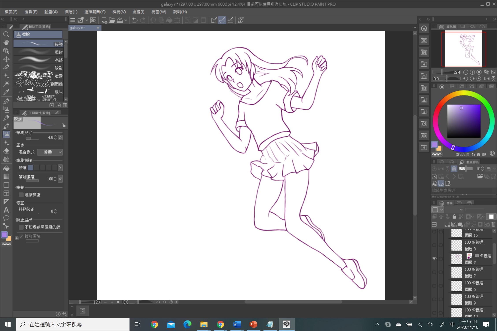

.png "皮膚")
Check your topic and main figure,and draw it casually.Just make sure all the objects are in the right position.
Don't worry if the line is a little messy.Let's keep it until the next step.
It's okay not to draw perfect lines at the first time
Tidy the multiple lines from drafts with the eraser.(Remember to choose the hard one!)
If prefer to trace it instead of erasing,the point of this step is to draw long strokes in one go for a tidy appearance(Especially when drawing hair and body outlines)
If make any mistakes,just undo(Ctrl+Z) it without worry!
It can be more convenient to turn the opacity lower before tracing it.
Small tips:
If the monitor’s aspect ratio is 16:9, then the drawing area of your pen tablet should also be 16:9.

Click the area to be colored to fill the area surrounded by the lines.
If small areas are left unfilled, select the [Fill] tool and select [Close and fill]. Closing the unfilled areas allows you to fill only the areas between the closed lines.
Draw the shadows around the neck and those created by the sleeves and hair.
Use the blurred edges of the brush to create a gradient on the skin. Use a light pen pressure.
Fill the shadow areas.
Try your best to draw the texture of the cloth.
.png "衣服")
Click to fill the tufts of hair on which to add shadow.
To fill an area without the necessary border lines, either color the area directly using the pen tool or draw a border line before using the [Fill] tool to add shadow to the area.
Color the small areas with the [Pen] tool so that no gaps remain.
.png "頭髮")
.png "臉和其他")
.png "臉和其他")
.png "背景")
Now is the time to adjust your whole work!
And of course, use the decoration tool to make your art more special.